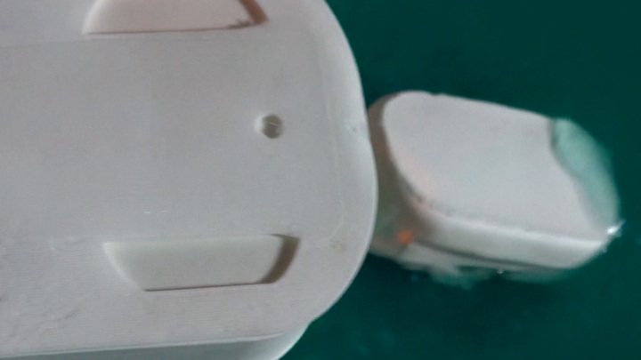

The last contact
When can the camera see two bodies? Look along the lower edge of the opening. A dark line widens between the pale surfaces. Even when the outlines part, a faint diagonal trace remains below them.

At 25.893 s one image mask distinguishes two pale regions. Closing narrow breaks in the mask joins them for one more frame.
What does the score hear?
The score samples a 480-pixel-wide view ten times a second. Its second voice enters at source time 25.9 s. In this closer reading, six choices of image scale or threshold put the first split at 25.926 s. Omitting the step that closes small breaks gives 25.893 s. That difference is one camera frame.
The algorithm measures the distance between two large, pale regions. A green interval between them can coexist with a faint line in the water. This angle alone cannot identify that trace, date the last point of physical contact or decide when an offspring became an individual. Watch the carrier after the gap opens. Its position keeps changing.
Camera and mask settings
Ruipeng Wang’s 3840 × 2160 recording runs at 30000/1001 frames per second. This fixed 1440 × 810 crop begins at native coordinate (1660, 550), and displays at 720 × 405. All 27 source pictures are shown in order. The slider changes the camera time without interpolating pictures.
The 960-pixel test selects a mean RGB value above 98 and a channel spread below 53. Four iterations of binary closing bridge small breaks. Only the two largest connected pale regions count, with a second region of at least 880 pixels. The reported gap is the shortest pixel-centre distance. The CSV also gives two brightness changes, two colour-spread changes, a half-width test and the result without closing.